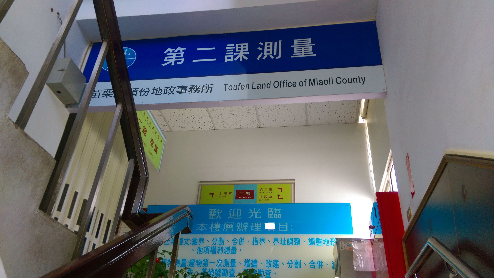
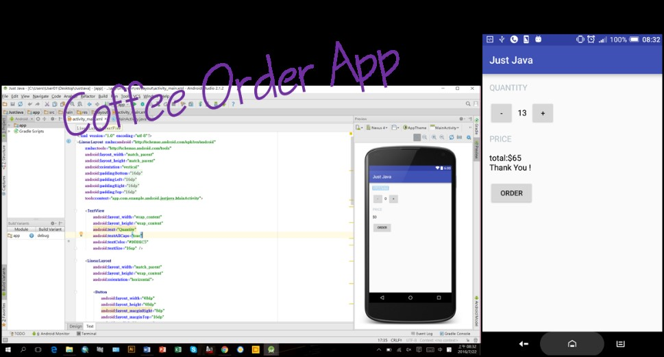

這周都待在頭份地政事務所查資料，有很多地籍重測名單上的土地所有權人的資料有誤，需要進到政府內部的系統才有辦法查詢，總共有將近兩千筆的資料，有的有身分證字號就比較容易找到，當中還有很多是名單上的身分證字號錯誤，只能用姓名查，再從同名同姓的資料中一一比對，做了一天下來眼睛都花了，大概花了三天的時間才把資料查完。

我在圖庫室裡用他們的電腦查，圖庫室裡架上放滿一本本的地籍調查表還有建物平面圖、地籍圖等資料，一直以為現在的資料全部都是電子檔，原來現在還有這麼多的紙本資料!!!

我也利用下班閒來無事的空檔繼續學習程式，這一階段可以寫出一個簡單的點咖啡App，按加號或減號來調整咖啡數量，最後計算金額，學習按鈕的設計以及背後的運算方法等，看來這周最大的成就莫過於此!! :D